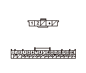

DTC 32
DTC 32:
リクライニング スイッチON同時入力異常
リクライニング スイッチの点検
1-1
リクライニング スイッチを外し、スイッチ単体の点検をする
◆ 正常か
YES
-
ステップ
2
へ進む
NO
-
リクライニング スイッチを交換する
リクライニング スイッチとリフタ コントロール ユニット間（REC UP SW、REC DN SWライン）の短絡点検
2-1
リフタ コントロール ユニット カプラB（32P）の接続を外す
2-2
リフタ コントロール ユニット カプラB（32P）のNo.5端子とNo.6端子間の導通を点検する
◆ 導通があるか
YES
-
リクライニング スイッチとリフタ コントロール ユニット間のコードの短絡
NO
-
ステップ
3
へ進む
リクライニング スイッチとリフタ コントロール ユ ニット間（REC UP SW、REC DN SW、US COMライン）の断線点検
3-1
リフタ コントロール ユニット カプラB（32P）の No.5端子、No.6端子、No.10端子とリクライニング スイッチ5PカプラのNo.2端子、No.4端子、No.1端子間の導通を確認する
◆ 導通があるか
YES
-
ステップ
4
へ進む
NO
-
リクライニング スイッチとリフタ コントロール ユニット間のコードの断線
再現テスト
4-1
リクライニング スイッチを取付ける
4-2
リフタ コントロール ユニット カプラB（32P）を接続する
4-3
リフト コントロール ユニットの初期位置学習を行う
4-4
リフト アップ シートを格納状態から振出まで作動させる
4-5
自己診断モードでDTCを確認する
◆ DTC 32を吹鳴するか
YES
-
リフタ コントロール ユニットを交換する
NO
-
一過性故障、現在システムは正常
